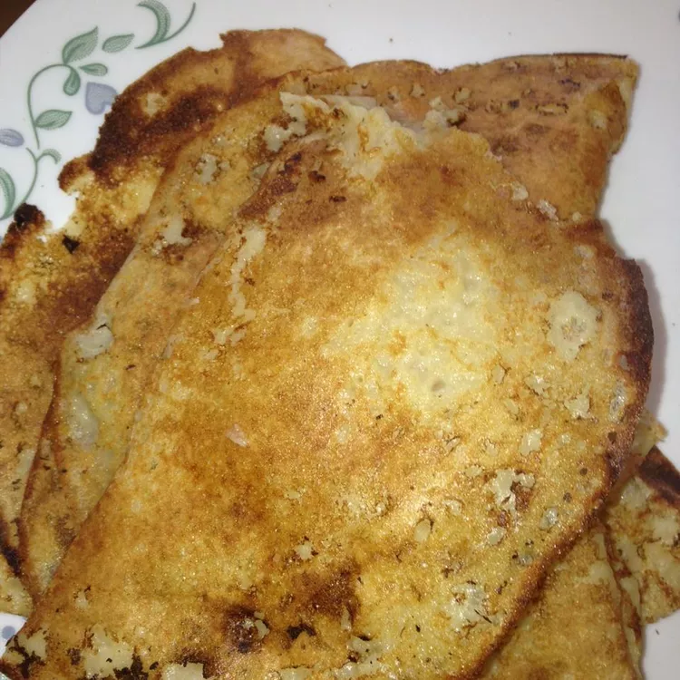

Wheat dosa. Serve with coconut chutney, sambar, or some other Indian curry.
Combine flour, 2 tablespoons oil, salt, and baking soda together in a bowl. Mix for 1 to 2 minutes. Add 1 3/4 cup water and mix until it's lump free, the chunks of flour have dissolved, and the batter has a good consistency, adding more water if needed.
Heat 1 tablespoon oil on a griddle over medium heat. Pour some of the batter onto the griddle; spread the batter in a circular motion, slowly yet steadily. Cook until the edges start to brown, 2 to 3 minutes. Remove from the grill. Repeat with remaining batter, adding more oil between each batch.